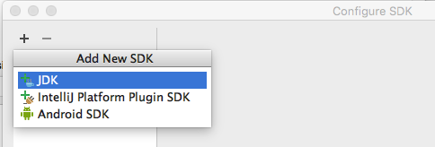

Test-First Training: Java
-
Clone this repo from GitHub
-
Download and Launch JetBrains IntelliJ IDEA
-
Open this project inside test-first-teaching/learn_java
-
Open intro/index.html in a local browser
-
Open
IntroTest.java in IntellJ
-
Set up your JDK
-
Click "Setup JDK"
-
Click "Configure..."
-
Click the "+" button
-
In "Add New SDK" menu, click "JDK"
-
Click "OK" a few more times

-
Add junit.jar to the classpath
- Select "File > Project Structure"
- Select "Add Library"
- Select the junit.jar file in this dir
- Select the "Modules" tab
- Make sure all lesson directories are selected as "Test" dirs
- Make sure there's a Compiler Output directory